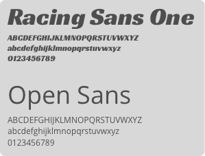

Garrettpriceart.com is my fine art portfolio site. Until now, I have relied on friends with web knowledge to create and maintain my site. I've had a hard time getting the design dialed in to the aesthetics that please my own eye. I have also not had the ability to update the site as frequently as I would like. A few key features were also missing, like a store page to purchase artwork directly as well as a full gallery of work, with appropriate title info for each work on the gallery.
The client(myself) has a fine art website that is the portfolio and first point of contact for nearly all prospective buyers, and appreciators of art. The current site at garrettpriceart.com loads slowly, lacks depth of content, and is a poor representation of my personal aesthetic. The primary goal of the residesign is to present my art in visually appealing and interesting way. More art will be added to the galleries, and short descriptions will be added to each gallery photo.
My initial design for the site was a continuous scrolling flow. All of the gallery links, shop and blog on one page.
User personas were created to help define the needs of user. A couple that I found particularly useful were the types of devices the different users would view the website from. A fully responsive website is one key to this website being successful. Versions for mobile and tablet user are currently in production. User testing was done which provided useful feedback on navigation links, the illustration and most importantly the gallery viewing style. Seeing a test user not instinctively click on the gallery thumbnails to view the art at full size was disappointing, yet very helpful.
A typography style guide was created. RACING SANS ONE was the choice for headline text for is bold, clean and modern feel. OPEN SANS was chosen for its sleek, easy-to-read, modern feel which lends itself well for small text/body copy.
The color choices were made to lighten the overall tone of the site, while focusing the interest on the gallery images of art. A single color, bright yellow, was used to give contrast to the muted gray tones. The yellow also gives a sense of energy to the color palette.

The shop is a new feature for the site, it has larger sized thumbnails and easy to read item descriptions with a bold color and size “buy now” button. The expanded view of the shop item also has a built in “buy now” button to capture the impulse to buy upon viewing the full-size product photo. The illustration is simple and meant to be both playful and dark. The eyes light up red when the mouse is hovered, just to add interest and interactivity. The logo Typography and color choices Design elements features Clean and simple, both color and layout.